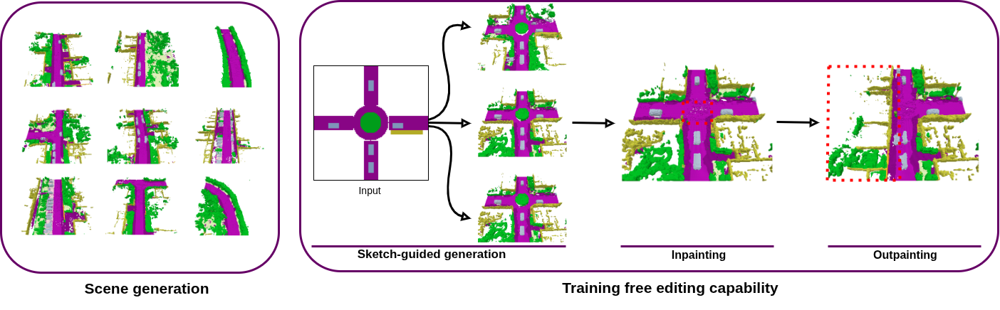
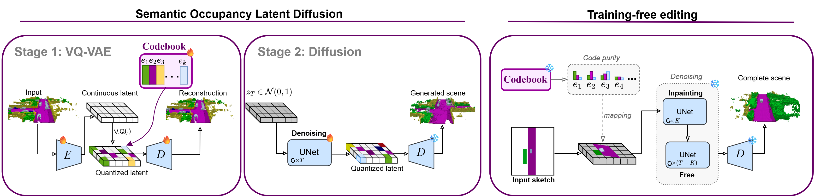
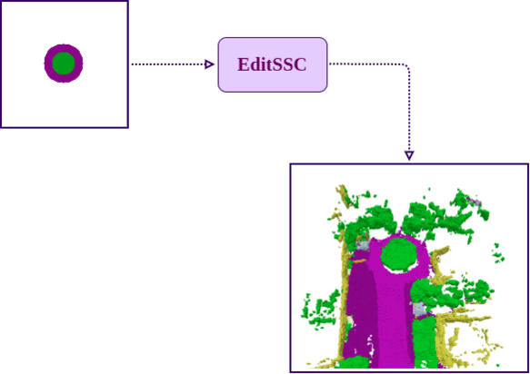

EditSSC: Toward Editable Semantic Occupancy Scenes with Unconditional Diffusion Models


Abstract
3D semantic scene generation is essential for autonomous driving applications, yet existing methods rely on complex 3D-specific architectures such as triplane encoders and adapted diffusion networks, limiting both their simplicity and their editing capabilities. We propose EditSSC, an editing-ready method for 3D semantic scene generation that uses 2D Bird's Eye View (BEV) representations and an off-the-shelf latent diffusion network. Our approach reshapes 3D semantic occupancy grids into multi-channel BEV images and leverages the quantized autoencoder and UNet from Stable Diffusion with minimal modifications. We perform diffusion on the latents obtained after quantization, which enables training-free editing capabilities. By exploiting class-to-code correspondences in the codebook, our method supports sketch-guided generation, inpainting, and outpainting without any retraining. On SemanticKITTI, EditSSC outperforms existing 3D-specific baselines on unconditional generation, demonstrating that well-established 2D architectures can be effectively repurposed for 3D scene generation and editing.
Method
EditSSC is a diffusion-based method for 3D semantic scene generation and editing. It reshapes 3D occupancy grids into 2D BEV images and leverages a quantized autoencoder and lightweight U-Net from Stable Diffusion. The discrete codebook enables training-free editing capabilities, including sketch-guided generation, inpainting, and outpainting, without any retraining.

Editing Capabilities

Citation
@InProceedings{balde2026editssc,
title={EditSSC: Toward Editable Semantic Occupancy Scenes with Unconditional Diffusion Models},
author={Balde, Fatima and de Charette, Raoul and Boulch, Alexandre},
booktitle={CVPR},
year={2026}
}